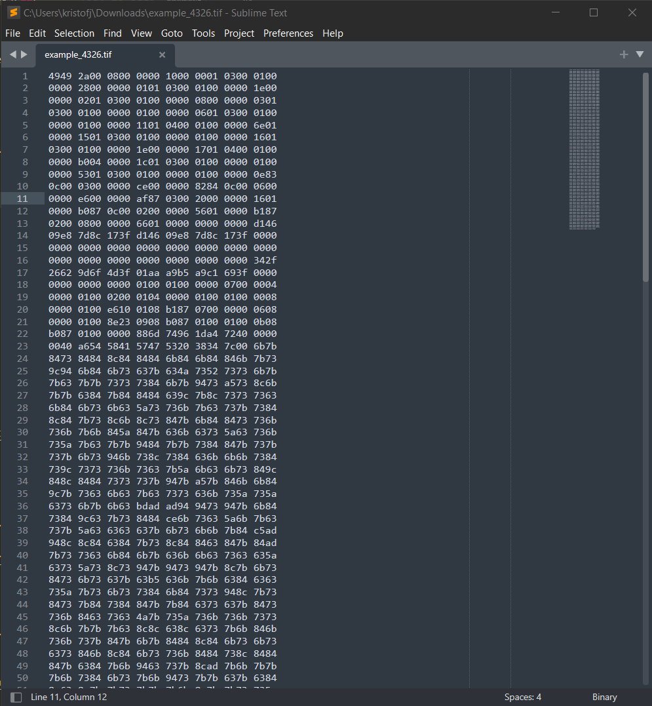
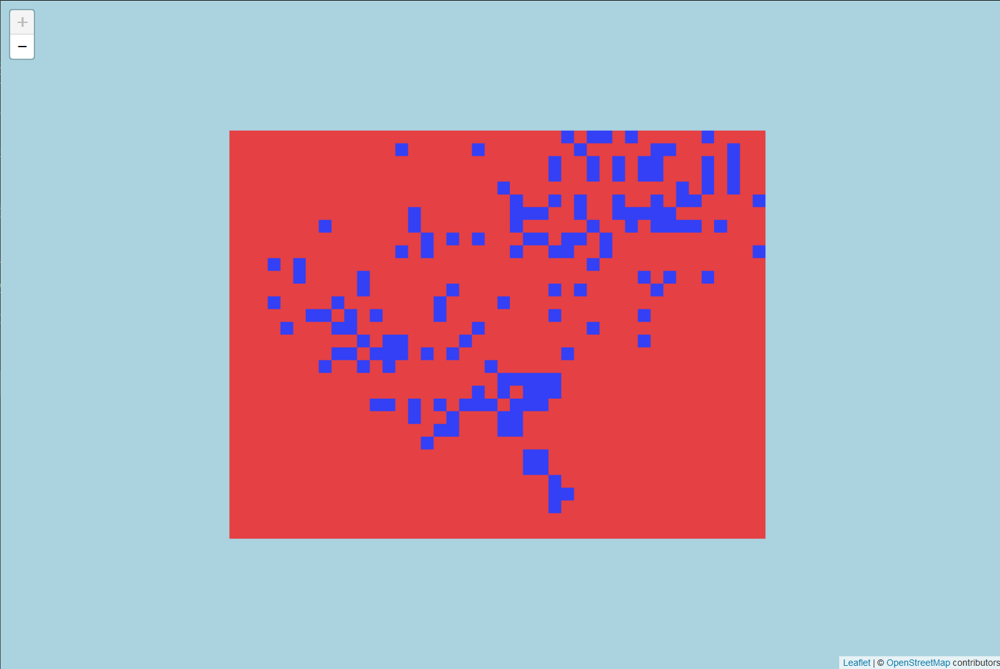
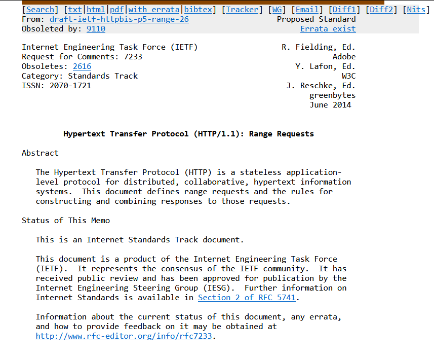

GeoTIFFs in the browser
Kris Johnson, NRRI/UMD - GIS/LIS 2022
Speakers notes go here.
Outline:
- What is geotiff.js?
- Why use it?
- How to use it?
- Examples
- My use case
geotiff.js
parses TIFF files for visualization or analysis, written in JavaScript
Speakers notes go here.
Support for the GeoTIFF capabilities we expect from a desktop GIS:
- various image compression methods
- geographical information
- internal tiling
- pixel or band interleaving
- automatic transformation from several color spaces to RGB
From this

Speakers notes go here.
To this

Speakers notes go here.
 Who's heard of COGs? Used them?
Who's heard of COGs? Used them?
A
Cloud Optmized GeoTIFF
is
a regular GeoTIFF file, hosted on a HTTP file server, with
an internal organization that allows clients issuing HTTP
GET range requests to ask for just the parts of a file they
need.
A web server (eg. Amazon S3, Google Cloud Storage) capable of HTTP range
requests

Speakers notes go here.
gdal_translate example.tif cog.tif -co TILED=YES -co COMPRESS=DEFLATE
gdaladdo -r average cog.tif 2 4 8 16 32
internal tiling, external overviews
Server-side (the traditional approach)
- WMS (for rendering)
- WCS (for analyzing)
Client-side (raster rendering and analysis in your browser)
- parse multiple formats (remote, local, via ArrayBuffer)
- compression
- resampling
- bounding box
Speakers notes go here.
Essentially, the raster equivalent of GeoJSON 🤯
Speakers notes go here.
-- OR --
server-less raster analysis 💥
Speakers notes go here.
Complimentary Technologies
I'm not an expert so I need to rely on these
Speakers notes go here.
Georaster
- simplifies the JavaScript interface to geotiff.js
Speakers notes go here.
How to use it?
Speakers notes go here.
load GeoTIFF
fetch(url_to_geotiff_file)
.then((response) => {
response.arrayBuffer())
Speakers notes go here.
parse ArrayBuffer to Georaster
.then((arrayBuffer) => {
parseGeoraster(arrayBuffer)
.then((georaster) => {
The ArrayBuffer object is used to represent a generic, fixed-length raw
binary data buffer. It is an array of bytes, often referred to in other
languages as a "byte array". You cannot directly manipulate the contents
of an ArrayBuffer; instead, you create one of the typed array objects or
a DataView object which represents the buffer in a specific format, and
use that to read and write the contents of the buffer.
create Leaflet layer from Georaster
var layer = new GeoRasterLayer({
georaster: georaster,
opacity: 0.7,
});
layer.addTo(map);{
This extends L.gridLayer so all the same options apply
Examples
Speakers notes go here.
LandsatLook
- a tool that allows rapid online viewing and access to the USGS Landsat
Collection 2 data
LandsatLook is a tool that allows rapid online viewing and access to
the USGS Landsat Collection 2 data. LandsatLook leverages resources
available via a commercial cloud environment including Cloud Optimized
GeoTIFF (COG) and Spatio Temporal Asset Catalog (STAC) metadata.
add your own GeoTIFF and play around
add your own GeoTIFF and play around
pixelValuesToColorFn: function(pixelValues) {
var pixelValue = pixelValues[0]; // there's just one band in this raster
if (pixelValue === 0) return null;
// scale to 0 - 1 used by chroma
var scaledPixelValue = (pixelValue - min) / range;
var color = scale(scaledPixelValue).hex();
return color;
},
pixelValuesToColorFn: values => {
const r = Math.round(values[0] + 1.40200 * (values[2] - 0x80));
const g = Math.round(values[0] - 0.34414 * (values[1] - 0x80) - 0.71414 * (values[2] - 0x80));
const b = Math.round(values[0] + 1.77200 * (values[1] - 0x80));
return `rgb(${r},${g},${b})`;
}
customDrawFunction: function({ context, x, y, width, height, values }) {
var value = values[0];
var arrowSize = width / 2.5;
context.save();
context.translate(x, y);
context.rotate((90+value)*Math.PI/180);
context.beginPath();
context.moveTo(-arrowSize/2, 0);
context.lineTo(+arrowSize/2, 0);
context.moveTo(arrowSize*0.25, -arrowSize*0.25);
context.lineTo(+arrowSize/2, 0);
context.lineTo(arrowSize*0.25, arrowSize*0.25);
context.stroke();
context.restore();
}
GeoTIFF is using EPSG:32615 (WGS 84 / UTM zone 15N)
add your own GeoTIFF and play around
Request headers

Response headers

add your own GeoTIFF and play around
Use this approach when:
- You don't have access to a server
- You don't want to mess with a server
-
You want to speed up imagery/raster load times (by using
COGs)
- You want client-side imagery/raster analysis
Thank you!
Kris Johnson, NRRI/UMD
kristofj@d.umn.edu